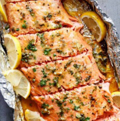

Honey Garlic Salmon
Deliciouisly fresh with just a hint of sweetness.

Ingredients
- 1/4 cup butter
- 1/3 cup honey
- 4 cloves garlic large, crushed
- 2 tablespoons lemon juice freshly squeezed, juice of 1/2 a lemon
- 2 1/2 pound side of salmon
- 1 pinch salt to taste
- 1 pinch cracked pepper to taste
- 4-5 lemon slices to serve
- 2 tablespoons fresh parsley chopped
Instructions
- Preheat your oven to 375°F, a rack in the center. Line a baking sheet with a large sheet of foil, making sure it’s long enough to wrap and seal the salmon fully.
- In a small saucepan over low-medium heat, melt the butter. Stir in the honey, crushed garlic, and lemon juice. Whisk until smooth and fully combined, then remove from heat.
- Place the salmon fillet skin-side down on the foil-lined tray. Pat it dry with a paper towel to remove excess moisture and help the sauce adhere better.
- Pour the honey garlic butter evenly over the salmon. Use a spoon or brush to spread it across the surface.
- Season with salt, cracked pepper, and top with lemon slices for added flavor.
- Fold the foil over the salmon and crimp the edges to seal it into a packet. Bake for 15 to 18 minutes, depending on the thickness of the fillet and your preferred doneness.
Chef's Notes
Delicious Salmon dish with just a hint of sweetness from the honey. See original recipe here.